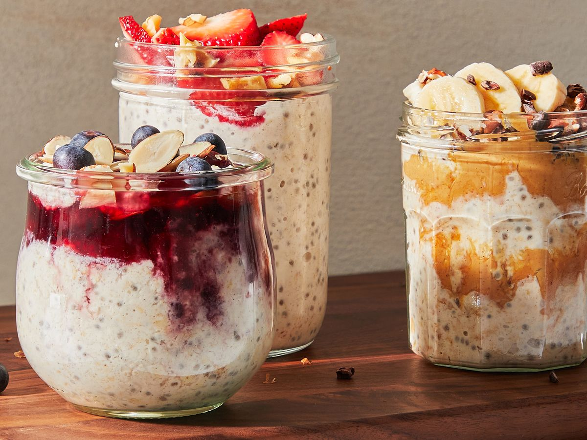

Overnight Oats!

Yummy protein Overnight Oats for weight loss!
One of the easiest, no-cook breakfast options that will leave you with healthy grab-and-go breakfasts to enjoy throughout the week. Bonus - it's endlessly customizable!
Ingredients
- Yogurt
- Milk
- Chia Seeds
- Rolled Oats
- Maple Syrup
Steps
- Stir it all together. In a small jar, stir together the oats, milk, yogurt, chia seeds, and maple syrup.
- It's soaking time. Place the jar in the fridge to let the oats soak for at least 2 hours, though overnight is best.
- Add toppings and serve. The next morning, add your favorite toppings and enjoy! Alternatively, you can scoop the oats out into a bowl and add toppings from there.